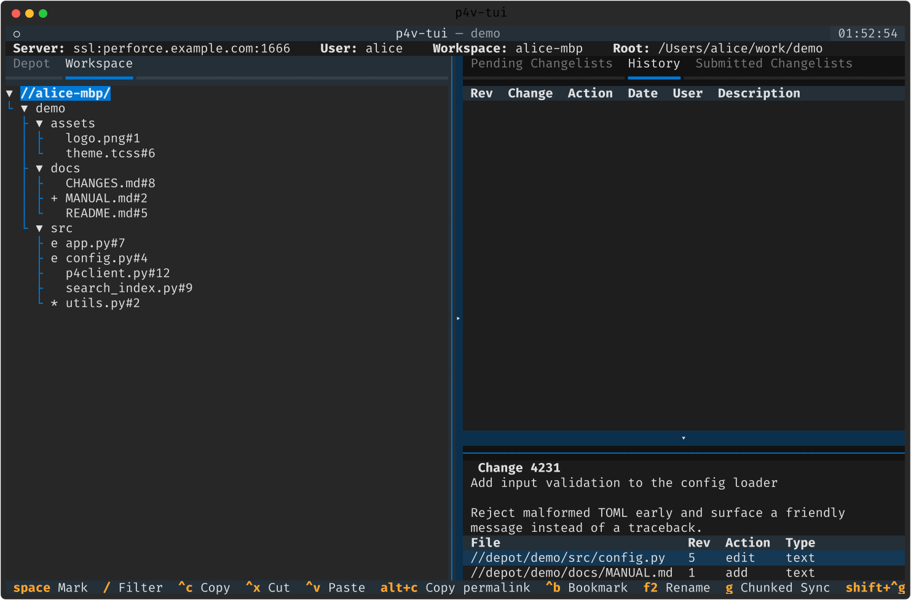
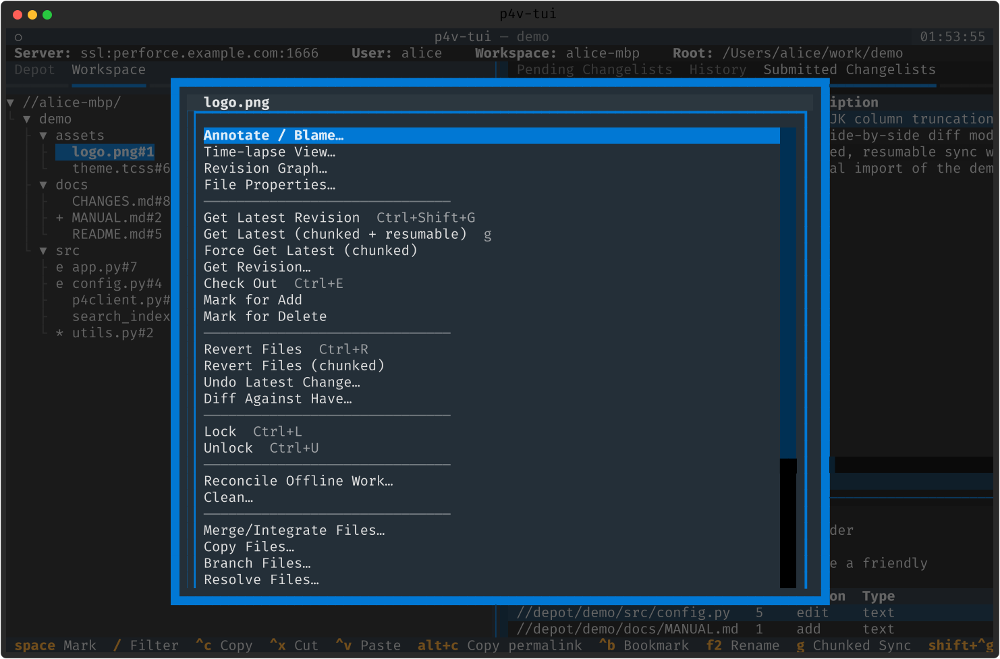
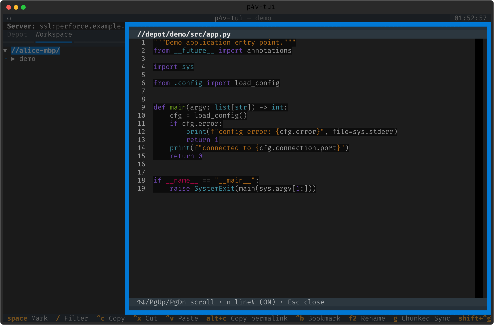

트리 · 파일 작업
왼쪽 트리에서 파일을 직접 조작합니다. 상태 마커, 맥락 메뉴, 다중 선택, 클립보드, 그리고 인앱 뷰어까지.
상태 마커
워크스페이스/디팟 트리는 파일마다 p4 fstat 기반 한 글자 마커를 보여줍니다 — 그래서 서버를 안 물어봐도 상태가 한눈에 들어옵니다.
| 마커 | 뜻 |
|---|---|
| e | 편집 대기(open for edit) |
| + | 추가 대기 |
| - | 삭제 대기 |
| * | 오래됨(have < head) |
| · | 한 번도 동기화 안 됨 |
| (빈칸) | 동기화됨 |

파일 작업 — 단축키 & 맥락 메뉴
트리에 포커스가 있으면 커서 파일(또는 다중 선택 집합)에 바로 동작을 겁니다. m(또는 Shift+F10)으로 전체 맥락 메뉴를 엽니다.
| 키 | 동작 |
|---|---|
| s / Ctrl+Shift+G | Get Latest (head 로 동기화) |
| g | Get Latest — 청크·재개 가능 ➕ |
| e / Ctrl+E | Check Out (open for edit) |
| a | Mark for Add |
| r / Ctrl+R | Revert (확인 후) |
| Ctrl+L / Ctrl+U | Lock / Unlock |
| Space | 다중 선택 토글 · Esc 해제 |
| F2 | 퀵 리네임 → 자체 CL 로 자동 서브밋 ➕ |

한글 IME 를 켜도 단축키가 그대로 작동합니다: 두벌식 자모 별칭(ㄴ=s,
ㄷ=e, ㄱ=r, ㅁ=a …).
대화형 Reconcile · Clean
오프라인 작업 정리는 전부-아니면-전무가 아니라, 미리보기 후 파일별로 고릅니다. 맥락 메뉴에서 Reconcile Offline Work → reconcile -n 드라이런 미리보기 → 체크/언체크 피커 → 청크 실행. Clean 도 같은 방식 (clean -n 미리보기 → 삭제 개수 확인).
트리 클립보드 · 인앱 뷰어
- 클립보드 ➕ — Ctrl+C 복사 / Ctrl+X 잘라내기 / Ctrl+V 붙여넣기. p4 copy/move 를 새 CL 로 실행하고 자동 서브밋합니다.
- 퍼머링크 · 북마크 — Alt+C 로 이동을 따라가는 불변 주소 복사, Ctrl+B 로 북마크(→ 7. 검색 · 이동).
- 경로 필터 — / 로 트리 필터 입력, 비매칭을 숨기고 부모를 자동 펼침.
텍스트 리프에서 Enter — 외부 뷰어로 새지 않고 문법 하이라이트된 파일을 바로 봅니다. 이미지는 반블록 ANSI 아트, 비이미지 바이너리는 헥스 창으로.
